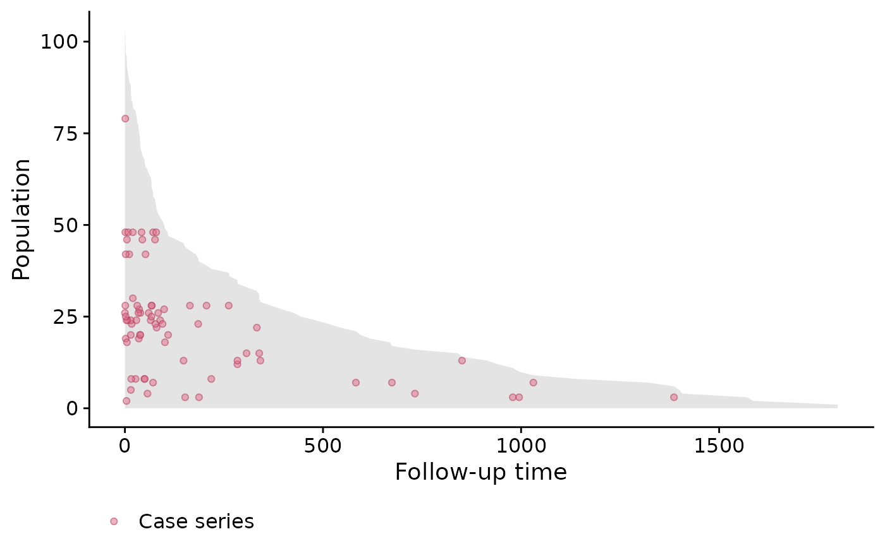

vignettes/time-varying-covariates.Rmd
time-varying-covariates.RmdIn the previous case studies, we only considered covariates that were fixed at baseline. In this next case study, we will use the Stanford Heart Transplant data (Clark et al. 1971) (Crowley and Hu 1977) to show how case-base sampling can also be used in the context of time-varying covariates. As an example that already appeared in the literature, case-base sampling was to study vaccination safety, where the exposure period was defined as the week following vaccination (Saarela 2015). Hence, the main covariate of interest, i.e. exposure to the vaccine, was changing over time. In this context, case-base sampling offers an efficient alternative to nested case-control designs or self-matching.
Recall the setting of Stanford Heart Transplant study: patients were admitted to the Stanford program after meeting with their physician and determining that they were unlikely to respond to other forms of treatment. After enrollment, the program searched for a suitable donor for the patient, which could take anywhere between a few days to almost a year. We are interested in the effect of a heart transplant on survival; therefore, the patient is considered exposed only after the transplant has occurred.
As before, we can look at the population-time plot for a graphical summary of the event incidence. As we can see, most events occur early during the follow-up period, and therefore we do not expect the hazard to be constant.
library(survival)
library(casebase)
stanford_popTime <- popTime(jasa, time = "futime",
event = "fustat")
plot(stanford_popTime)
Since the exposure is time-dependent, we need to manually define the
exposure variable after case-base sampling and before
fitting the hazard function. For this reason, we will use the
sampleCaseBase function directly.
library(dplyr)
library(lubridate)
cb_data <- sampleCaseBase(jasa, time = "futime",
event = "fustat", ratio = 10)Next, we will compute the number of days from acceptance into the program to transplant, and we use this variable to determine whether each population-moment is exposed or not.
# Define exposure variable
cb_data <- mutate(cb_data,
txtime = time_length(accept.dt %--% tx.date,
unit = "days"),
exposure = case_when(
is.na(txtime) ~ 0L,
txtime > futime ~ 0L,
txtime <= futime ~ 1L
))Finally, we can fit the hazard using various linear predictors.
library(splines)
# Fit several models
fit1 <- fitSmoothHazard(fustat ~ exposure,
data = cb_data, time = "futime")
fit2 <- fitSmoothHazard(fustat ~ exposure + futime,
data = cb_data, time = "futime")
fit3 <- fitSmoothHazard(fustat ~ exposure + bs(futime),
data = cb_data, time = "futime")
fit4 <- fitSmoothHazard(fustat ~ exposure*bs(futime),
data = cb_data, time = "futime")Note that the fourth model (i.e. fit4) includes an
interaction term between exposure and follow-up time. In other words,
this model no longer exhibit proportional hazards. The evidence of
non-proportionality of hazards in the Stanford Heart Transplant data has
been widely discussed (Arjas 1988).
We can then compare the goodness of fit of these four models using the Akaike Information Criterion (AIC).
# Compute AIC
c("Model1" = AIC(fit1),
"Model2" = AIC(fit2),
"Model3" = AIC(fit3),
"Model4" = AIC(fit4))
#> Model1 Model2 Model3 Model4
#> 493.2688 454.6240 441.4930 445.1944As we can, the best fit is the third model.
By visualizing the hazard functions for both exposed and unexposed individuals, we can visualize the non-proportionality of the fourth model.
# Compute hazards---
# First, create a list of time points for both exposure status
hazard_data <- expand.grid(exposure = c(0, 1),
futime = seq(0, 1000,
length.out = 100))
# Set the offset to zero
hazard_data$offset <- 0
# Use predict to get the fitted values, and exponentiate to
# transform to the right scale
hazard_data$hazard = exp(predict(fit4, newdata = hazard_data,
type = "link"))
# Add labels for plots
hazard_data$Status = factor(hazard_data$exposure,
labels = c("NoTrans", "Trans"))
library(ggplot2)
ggplot(hazard_data, aes(futime, hazard, colour = Status)) +
geom_line() +
theme_minimal() +
theme(legend.position = 'top') +
ylab('Hazard') + xlab('Follow-up time')
The non-proportionality seems to be more pronounced at the beginning of follow-up than the end.